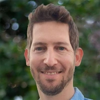
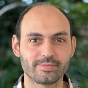
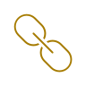
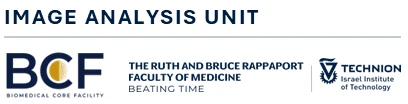

17 slides · scroll to browse, or select a slide to view it full screen
Slide 1 of 17: Image Analysis Unit
BCF, Biomedical Core Facility. The Ruth and Bruce Rappaport Faculty of Medicine, Technion – Israel Institute of Technology. Presented by Eilam Golan Zagagy, November 2026.
Slide 2 of 17: Image Analysis Unit – From Images to Quantitative Insights
A workflow diagram: microscope, microscopy image, image analysis, and the results: measurements, features, statistics and visualizations.
Slide 3 of 17: Our Services
- Custom Pipeline Development: tailored analysis built for your research.
- Full-Service Analysis: we process your data on our GPU-powered workstations.
- Self-Service Workstations: work independently to develop and run your analysis.
- Bioimage Analysis Training: skills to analyze your images independently.
Slide 4 of 17: Analysis Capabilities
- Pre-Processing and Restoration: filtration, denoising, deblurring, registration, reconstruction.
- Detection and Segmentation: object detection, segmentation, classification.
- Quantification (Feature Extraction): counting, morphological measurements, intensity measurements, texture analysis, co-localization, spatial analysis.
- Dynamics and Biomechanics: tracking, flow fields, deformation and strain fields (DIC), stress fields.
Slide 5 of 17: Main Methods, Models and Tools
- Deep learning models: Cellpose, StarDist, U-Net, SAM, DINO, YOLO, Noise2Void.
- Python ecosystem: Python, SciPy, scikit-image, OpenCV, SimpleITK, pydicom, skan.
- Other software and methods: QuPath, FFT, PIV, DIC (Digital Image Correlation).
Slide 6 of 17: Deriving Quantitative Information From Images
A processing pipeline shown on a fluorescence image of nuclei: acquisition, denoising, background subtraction, segmentation, labeling and feature extraction, ending in a table of area and position measurements. Image source: Haase, R. (2020), Applied Bioimage Analysis, TU Dresden; image data: Daniela Vorkel, Myers lab, MPI-CBG.
Slide 7 of 17: Quantification (Feature Extraction)
Feature categories illustrated with simple shapes: size, intensity, shape, position, moments and texture. Image source: Haase, R., BioImage Analysis Notebooks.
Slide 8 of 17: 2D and 3D Segmentation
Fluorescent nuclei in 2D and in a 3D volume, each shown next to its segmentation with every nucleus in a different color. Image source: stardist.net and github.com/stardist.
Slide 9 of 17: Multi-Scale Segmentation
Animation of an H&E-stained tissue section, segmented at several scales.
Slide 10 of 17: Cell Segmentation from Membrane Staining
Animation of a membrane-stained tissue image and the segmentation of its individual cells.
Slide 11 of 17: Segmentation with a Custom-Trained Model
Tissue regions detected by a custom-trained model, each outlined with a box and filled with a different color.
Slide 12 of 17: Segmentation and Classification
Segmented cells colored by their assigned class.
Slide 13 of 17: Color Segmentation
Animation of a stained tissue section (blue and red stains) and its segmentation by color.
Slide 14 of 17: Atlas-Based Brain Segmentation and Registration
Two animations: brain regions segmented by registration to an atlas, and a 3D brain volume.
Slide 15 of 17: 3D Image Registration
A series of 2D sections, and an animation of the 3D volume reconstructed by registering them. Credit: H. Haykin, A. Rolls.
Slide 16 of 17: Denoising
Three animations comparing noisy and restored microscopy images. Image source: Stringer, C., and Pachitariu, M. (2025), Cellpose3: one-click image restoration for improved segmentation, Nature Methods.
Slide 17 of 17: Contact Us
IMAGE ANALYSIS UNIT
-

Eilam Golan Zagagy geilam@technion.ac.il -

Raghd Abu-Sinni sraghd@technion.ac.il
-

BCF website bcf.technion.ac.il - Image Analysis Unit page bcf.technion.ac.il/products/image-analysis
presentation online

17